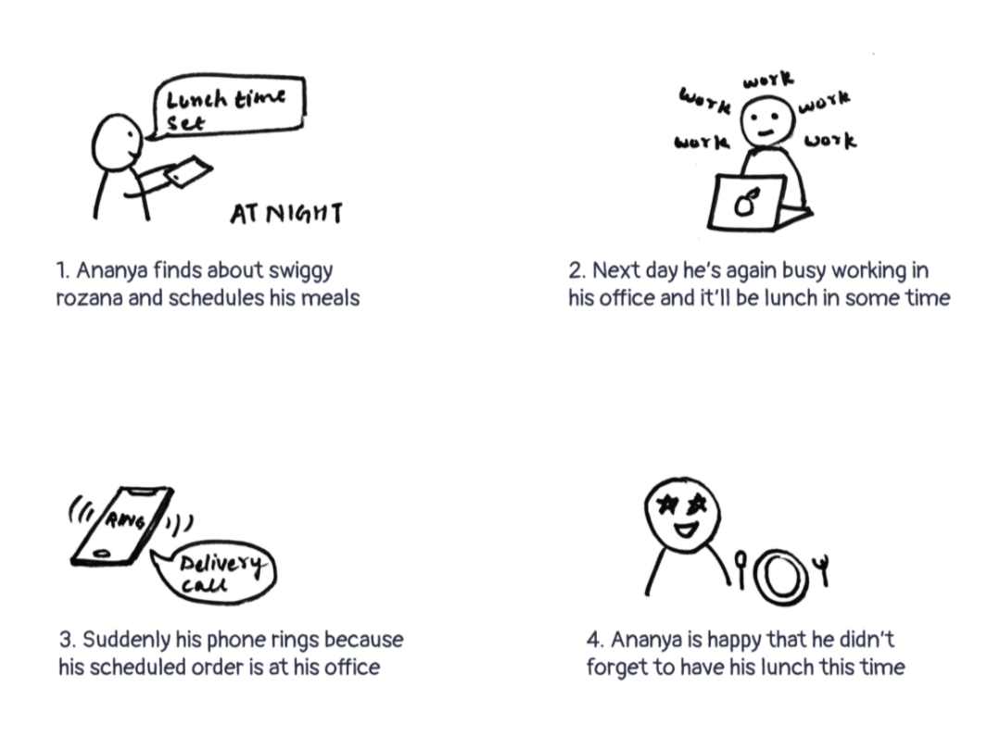

The research was done with 20 people through a 1:1 phone call, working across Johannesburg Area working in small to large companies to diversify the research.
As a budget-conscious working individual (user) I’m really busy the whole day and find myself skipping meals (pain point) which is not healthy for me, I want to eat healthy food and I don’t want to skip meals (motivation)
A user persona is a representation of the goals and behavior of a hypothesized group of users. In most cases, personas are synthesized from data collected from interviews with users.
An Empathy map will help you understand your user’s needs while you develop a deeper understanding of the persons you are designing for. An Empathy Map is just one tool that can help you empathize and synthesize your observations from the research phase, and draw out unexpected insights about your user’s needs.
On this scenario is a situation that captures how users perform tasks within the app. On storyboard it is where visual representation of how the user would react with the app.
A series of steps (“flow”) that users must complete for a specific task. Here task that the user is completing is “Placed order successfully”
Sketching takes your imaginative mind from the clouds to the user interface screen where you can start thinking about the user experience. You’ll be able to figure out how your app will work to get the desired result. Sketching allows you to visualize the screen-to-screen interaction so that your idea is something that’s visible and clear in user interface form.
A wireframe is a low-fidelity, simplified outline of your product.
So often seemingly obvious but absolutely forgotten things emerge out of interviews and quick user tests. The task of “quickly integrating the possibility to become a member” became something bigger and we investigated the complete website and understood how the users use the site plus what factors play a role to finally decide to complete a membership. So, the mere function is without value if you don‘t consider the whole journey.
Also, for me, creating the entire automated process by linking the web form to Salesforce, MailChimp and Excel spreadsheets via API (using Zapier) was a new experience, and still there‘s much more I‘d like to automate and smarten-up, as partially stated in the improvements section above.
‍